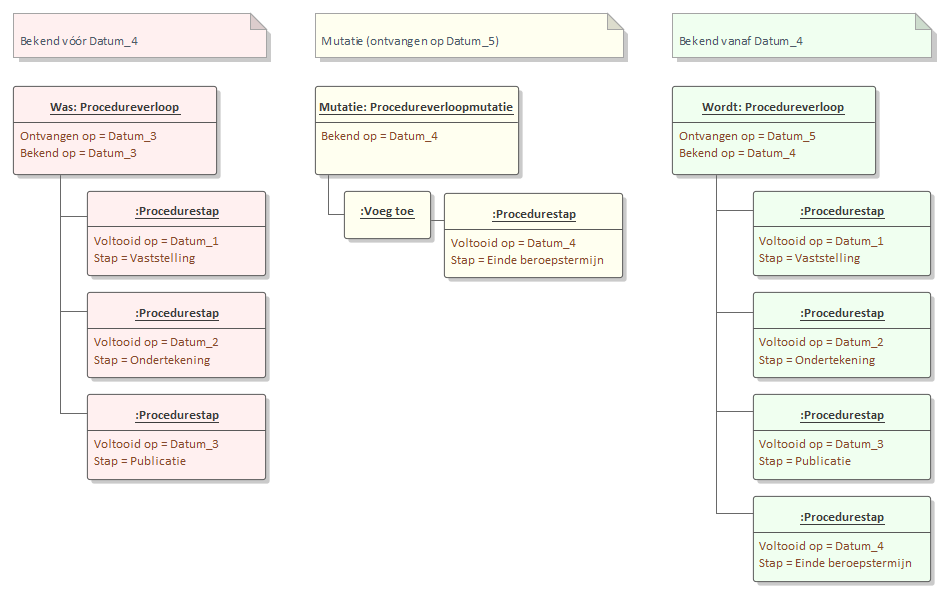
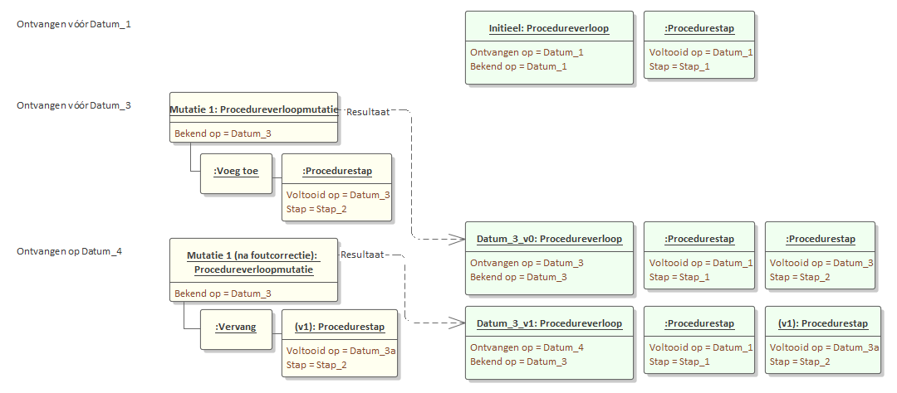
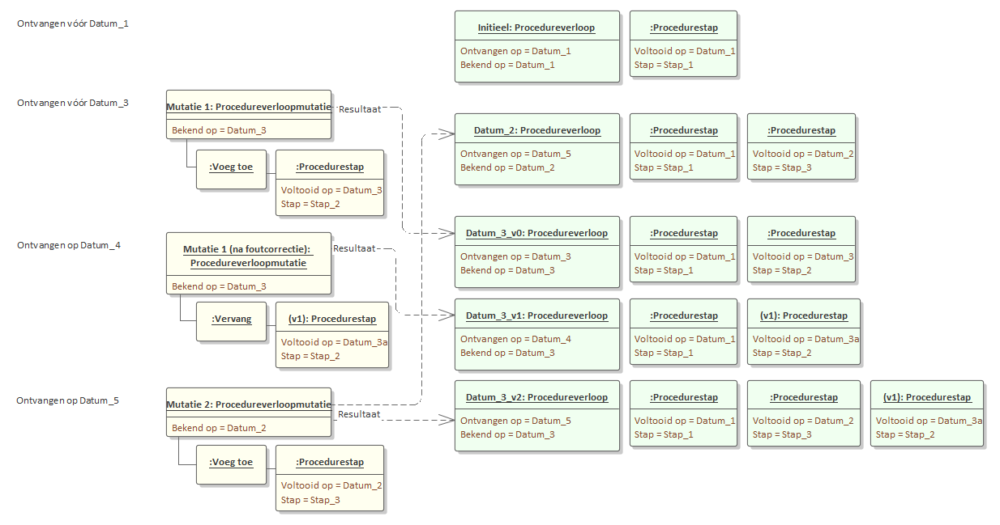
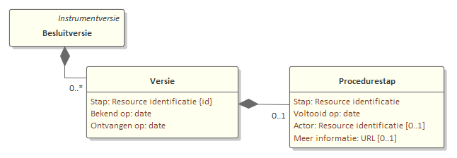
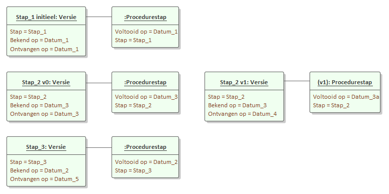

Muteren van het procedureverloop
Het procedureverloop geeft de levensloop van een besluit weer zoals het op een gegeven moment voor eenieder bekend is. In de loop van de tijd wordt het procedureverloop aangevuld, waarbij een stap in de procedure door verschillende actoren gezet kan worden. Bijvoorbeeld:
een provincie ondertekent een voorbereidingsbesluit na vaststelling;
de LVBB publiceert het besluit;
de gemeente neemt een definitief besluit dat vergezeld gaat met een intrekking van het voorbereidingsbesluit; of misschien:
de rechter vernietigt het besluit.
Het bevoegd gezag is verantwoordelijk voor het accuraat bijhouden van het procedureverloop. Tot de publicatie is het bevoegd gezag de bron van het procedureverloop; na publicatie is dat de LVBB. Als het bevoegd gezag nieuwe informatie over de levensloop heeft, wordt dat via een procedureverloopmutatie doorgegeven aan de LVBB. Waardoor de volledige procesflow van een besluit wordt bijgehouden. De LVBB verwerkt de wijzigingen in het procedureverloop en zorgt voor de verdere verspreiding ervan.
Deze documentatie beschrijft het verwerken van mutaties van het procedureverloop:
Principe beschrijft de werking van de mutatie;
Complexiteit gaat in op de complexiteit die bij het muteren kan optreden;
Implementatie geeft een mogelijke implementatie van het procedureverloop die recht doet aan de complexiteit.
In de voorbeelden wordt als conventie gehanteerd dat Datum_n is een datum na Datum_m als n groter is dan m, dus Datum_2 valt na Datum_1.
Principe
Het muteren van het procedureverloop volgt de systematiek van objectgericht muteren. Het object is in dit geval een procedurestap, de identificatie van het object is de combinatie van Stap plus VoltooidOp-datum. Het procedureverloop zelf kent geen versienummering; in plaats daarvan worden de Bekend op en eventueel Ontvangen op datums gebruikt om versies van het procedureverloop aan te duiden.
Een procedureverloopmutatie muteert het procedureverloop zoals dat bekend en ontvangen was voorafgaand aan de datums geassocieerd met de mutatie:

De mutatie beschrijft een additionele stap in het procedureverloop die bekend is geworden op Datum_4 en door een STOP-gebruikend systeem (zoals de LVBB) is ontvangen op Datum_5. De mutatie wijzigt het procedureverloop zoals dat bekend en ontvangen was op een eerdere datum; in het voorbeeld is dat de Was versie van de context module die bekend is geworden op Datum_3.
De mutatie leidt tot een nieuwe versie (Wordt) van de context module met een extra procedurestap en andere Bekend op en Ontvangen op datums. De Ontvangen op datum hoeft alleen bijgehouden te worden om bepaalde tijdreizen mogelijk te maken.
Complexiteit
Een robuuste implementatie van het muteren van het procesverloop moet rekening houden met twee aspecten die zorgen voor extra complexiteit:
een procedureverloopmutatie is een annotatie die opnieuw uitgewisseld kan worden om een fout in een eerdere uitwisseling te corrigeren;
met name bij scenario's waarin de rechterlijke macht een rol speelt kan een procedurestap met enige vertraging uitgewisseld worden, waardoor de mutatie niet op de meest recente versie van de contextmodule moet plaatsvinden.
Deze twee scenario's worden geïllustreerd in onderstaande voorbeelden.

In bovenstaand voorbeeld is op Datum_1 een initiële versie van het procedureverloop (met één procedurestap) uitgewisseld en op Datum_3 een mutatie die een procedurestap toevoegt. In de mutatie bleek een fout geslopen te zijn; op Datum_4 wordt daarom de annotatie gecorrigeerd door een nieuwe versie van de annotatie c.q. procedureverloopmutatie uit te wisselen.
Bij het verwerken van de gecorrigeerde mutatie moet de eerdere uitgewisselde mutatie genegeerd worden en de nieuw uitgeleverde mutatie toegepast worden. Er ontstaat een nieuwe versie van de contextmodule met dezelfde Bekend op datum als de oude versie, maar met een andere Ontvangen op datum. Als het STOP-implementerende systeem tijdreizen op basis van de beschikbaar op parameter wil ondersteunen dan moeten beide versies beschikbaar blijven, anders hoeft alleen de meest recente versie beschikbaar te blijven.
Het effect van een vertraagd uitgewisselde mutatie wordt geïllustreerd in:

In dit voorbeeld wordt op Datum_5 een mutatie uitgewisseld die betrekking heeft op een procedurestap die al eerder, op Datum_2, voor eenieder bekend is geworden. Dat is blijkbaar via een ander kanaal (en niet via STOP) gepubliceerd. Vanwege de Bekend op datum van de procedureverloopmutatie betreft het een mutatie op de initiële versie van het procedureverloop. De eerste mutatie (mutatie 1 van Datum_3) moet nu als mutatie op de nieuw ontstane versie te zijn in plaats van op de initiële versie.
Mogelijke implementatie
STOP is een standaard die de uitwisseling van informatie beschrijft. Om een actuele stand van het procedureverloop uit te wisselen is gekozen voor een uitwisseling in de vorm van een contextmodule. Gezien de complexiteit die kan optreden is een contextmodule niet de meest handige manier om het procedureverloop te modelleren in een STOP-gebruikend systeem dat procedureverloopmutaties accepteert.
In plaats daarvan kan beter een (intern) datamodel gebruikt worden als:

Zowel voor de procedurestappen uit het initiële procedureverloop als voor de stappen die in een procedureverloop worden toegevoegd of vervangen, wordt een Versie-object gemaakt met de Bekend op en Ontvangen op die overeenkomen met de datums van het procedureverloop(mutatie); de Versie verwijst naar de procedurestap. Voor procedurestappen die via een procedureverloopmutatie verwijderd worden wordt een Versie-object gemaakt zonder verwijzing naar een procedurestap. Het eerder getoonde voorbeeld resulteert dan in:

De inhoud van een Procedureverloop-contextmodule kan dan voor een tijdreis als volgt samengesteld worden; de tijdreis kent gegeven waarden voor de parameters Bekend op en Ontvangen op:
Selecteer voor elk type stap (d.w.z voor elke waarde van Stap) de Versie objecten waarvoor de Bekend op en een Ontvangen op datums kleiner of gelijk zijn aan de corresponderende tijdreisparameters;
Kies uit de selectie de Versie met de grootste (meest recente) Ontvangen op datum;
Maak een (lege) Procedureverloop contextmodule aan met als Bekend op datum de grootste waarde van de Bekend op datums van alle gekozen Versie objecten en als Ontvangen op datum de grootste waarde van de Ontvangen op datums.
Voeg alle Procedurestap objecten toe waarnaar de gekozen Versie objecten verwijzen.